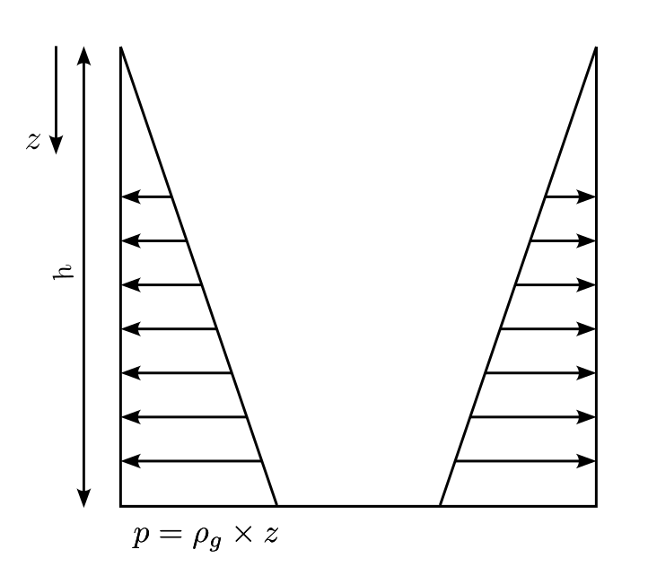
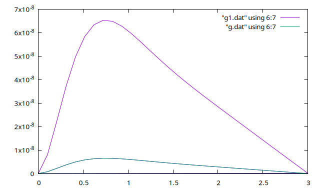
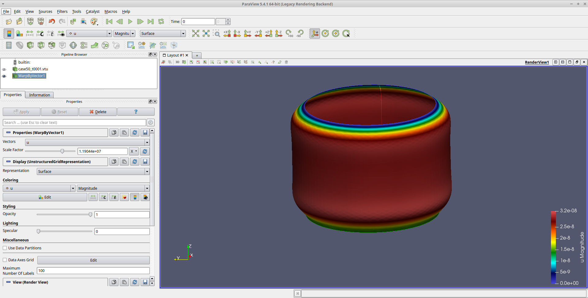

Table of Contents
1. Purpose

2. create the mesh
//+
SetFactory("OpenCASCADE");
Mesh.MeshSizeFromCurvature = 100;
//εξωτερικός κυκλος
//+
Circle(1) = {0, 0, 0, 1.65, 0, 2*Pi};
//+
Curve Loop(1) = {1};
Plane Surface(8) = {1};
//+00
Extrude {0, 0, 1} {Curve{1};}
//+
//+
3. automate export of mesh to elmer
For converting the .geo file to elmer mesh by scripting we need the following script:
gmsh -2 cylinder_shell.geo -o cylinder_shell.msh ElmerGrid 14 2 cylinder_shell.msh -autoclean
4. write the sif file
the full sif file is included.
to mention what to change each time we have:
We need to elmergui to find boundary conditions and bodies.
On shells the mesh is 2d, that's why it is rendered with gmsh -2 command.
So we have only surface and curve boundaries.
The surfaces are the bodies.
So we apply a normal pressure on surface 2, which is the cylinder:
Body Force 2 Normal Pressure = Variable Coordinate 3; Real MATC "-2000*(3.0-tx)" End
the solver I used is iterative
Solver 1 Equation = "Shell equations" Procedure = "ShellSolver" "ShellSolver" Large Deflection = True Displace Mesh = True Linear System Solver = "Iterative" Linear System Preconditioning = ILU2 Linear System Max Iterations = 10000 Linear System Convergence Tolerance = 1e-5 Linear System Iterative Method = GCR Linear System GCR Restart = 100 Linear System Abort Not Converged = False Steady State Convergence Tolerance = 1e-09 Nonlinear System Convergence Tolerance = 1e-8 End
the boundary condition at the base where it touches the ground, and the tank has max pressure is:
if the connection is to stiff, uncomment the DNU part.
Boundary Condition 1 Target Boundaries(1) = 1 U 1 = Real 0 U 2 = Real 0 U 3 = Real 0 !DNU 1 = Real 0 !DNU 2 = Real 0 !DNU 3 = Real 0 End
These are enough to check the results on paraview.
4.1. checking the results with plot
Add a second solver
Solver 3 Equation = "SaveLine" Procedure = File "SaveData" "SaveLine" Filename = "g5.dat" File Append = Logical True Polyline Coordinates(2,2) = Real 0.0 1.0 0.0 2.0 End
It applies to a vertical line on cylinde wall, need to check to GUI to see the line and the number
Boundary Condition 4 Target Boundaries(1) = 2 Save Line = Logical True End
Now it exports the pressure on wall as g5.dat
The .dat file has the following columns:
Data on different columns 1: Call count 2: Boundary condition 3: Node index 4: coordinate 1 5: coordinate 2 6: coordinate 3 7: u 1 8: u 2 9: u 3 10: dnu 1 11: dnu 2 12: dnu 3
the line is vertical on z axis, so we need the column 6 as abscissa.
The deflection is described at column 7 u 1 variable. This variable is \(\delta R\), change of diameter, due to pressure.
to plot the results I need:
plot "g1.dat" using 6:7 with lines,\
"g4.dat" using 6:7 with lines
each dat, file is for different pressure, material etc. This helps compare results.
the plot is give as follows:

5. problem
